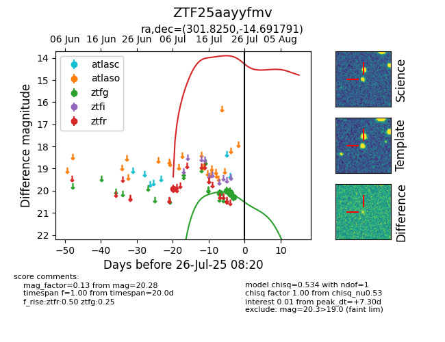

Target ZTF25aayyfmv at 2025-07-26 08:20, see:
FINK: fink-portal.org/ZTF25aayyfmv
Lasair: lasair-ztf.lsst.ac.uk/objects/ZTF25aayyfmv
ALeRCE: alerce.online/object/ZTF25aayyfmv
alt names
ZTF25aayyfmv (ztf,fink)
coordinates:
equatorial (ra, dec) = (301.8250,-14.69179)
galactic (l, b) = (27.7868,-23.29307)
photometry
last ztfg=20.28, ztfr=19.90
5 ztfg, 1 ztfr detections
